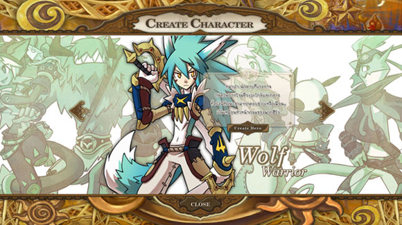
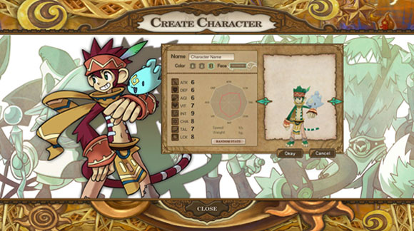
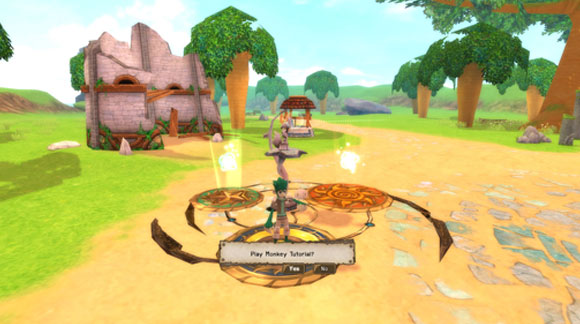

| |
1.เมื่อเข้าสู่เกมจะเริ่มที่เสาแห่งเฟริ์สเทล
ผู้เล่นสามารถเลือกสร้างตัวละคร โดย 1 ID จะสร้างตัวละครไม่ซ้ำอาชีพ
กันได้ 3 ตัวละคร

เลือกที่แสงไฟแห่งการกำเนิดของเฟริ์สเทล จะเข้าสู่หน้าเลือกตัวละคร

2.เมื่อได้ตัวละครที่ต้องการเล่นแล้ว

- ใส่ชื่อที่ช่อง Name
- เลือกสีได้ที่ Color โดยแต่ละตัวละครจะมีสีพื้นฐาน 3 สี
- เลือก Random ที่ Face และ Random Status จนได้แบบที่ผู้เล่นต้องการ แล้วเลือก
Okay
3.หลังจากนั้นเกมจะพาผู้เล่นเข้าสู่โหมดฝึกซ้อม ที่ทำให้เพิ่ม Level ในครั้งแรกได้ ให้เลือกที่ Yes
หมายเหตุ : ผู้เล่นสามารถใช้วิธีนี้ในการสร้างตัวละครตัวต่อไปจนครบ 3 ตัวละครได้ |
|
|